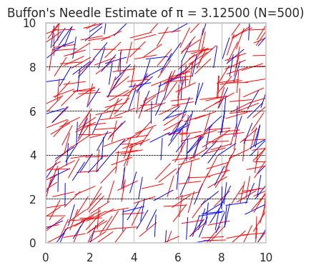
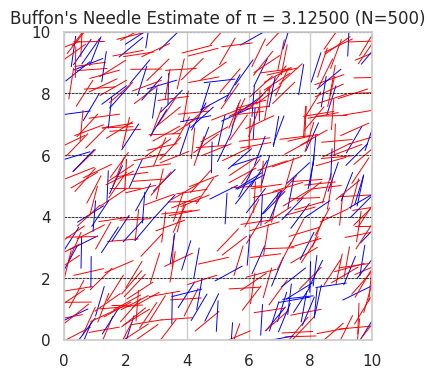

Problem 2
🎯 Problem 2: Estimating \(\pi\) Using Monte Carlo Methods
🎯 Motivation
The Monte Carlo method uses randomness to solve numerical problems, and one of its most elegant uses is estimating \(\pi\). By modeling geometrical probability problems—like throwing darts at a circle or dropping needles on a plane—we can approximate \(\pi\) without complex formulas.
This approach: - Connects geometry, probability, and numerical analysis. - Demonstrates how randomness can yield accurate results. - Offers insight into convergence, accuracy, and computational cost.
🔵 Part 1: Estimating \(\pi\) Using a Circle
1️⃣ Theoretical Foundation
Imagine a unit circle (radius = 1) inscribed in a square with sides of length 2 (from \(-1\) to \(1\) on both \(x\) and \(y\) axes).
- The area of the circle is: \(\(A_{\text{circle}} = \pi r^2 = \pi \cdot 1^2 = \pi\)\) \(\(- The area of the square is:\)\) \(\(A_{\text{square}} = 2 \cdot 2 = 4\)\)
Now, if we randomly throw points into the square, the probability that a point lands inside the circle is:
So, rearranging:
2️⃣ Simulation Procedure (Conceptually)
- Generate many random points \((x, y)\) such that \(x, y \in [-1, 1]\).
- A point lies inside the circle if: \(\(x^2 + y^2 \leq 1\)\)
- Count how many points satisfy this condition.
- Estimate \(\pi\) using: \(\(\pi \approx 4 \cdot \frac{\text{Points inside the circle}}{\text{Total points generated}}\)\)
3️⃣ Visualization (Conceptually)
- Plot all generated points on a 2D plane.
- Color points inside the circle (satisfying \(x^2 + y^2 \leq 1\)) in one color (e.g., blue).
- Color points outside the circle in another color (e.g., red).
- The plot visually approximates the circle within the square.
4️⃣ Analysis
- Accuracy improves as the number of points increases.
- The estimate converges slowly; thousands to millions of points are often required for high accuracy.
- The method is simple but not computationally efficient compared to analytical formulas.
- The standard deviation of the estimate decreases proportionally to: \(\(\frac{1}{\sqrt{n}}\)\) where \(n\) is the number of points.
🪡 Part 2: Estimating \(\pi\) Using Buffon’s Needle
1️⃣ Theoretical Foundation
Buffon’s Needle is a classic probability problem:
- Imagine parallel lines spaced \(d\) units apart.
- Drop a needle of length \(l \leq d\) randomly on the plane.
- The probability that the needle crosses a line is: \(\(P = \frac{2l}{d\pi}\)\)
- Solving for \(\pi\): \(\(\pi \approx \frac{2l \cdot N}{d \cdot C}\)\)
Where: - \(N\): Total number of needle drops - \(C\): Number of times the needle crosses a line
2️⃣ Simulation Procedure (Conceptually)
Set: - Needle length \(l = 1\) - Line spacing \(d = 2\) (or any \(d \geq l\))
For each needle drop: - Randomly select the distance \(y\) from the center of the needle to the nearest line, uniformly from \(0\) to \(d/2\). - Randomly select the angle \(\theta\) that the needle makes with the horizontal, uniformly from \(0\) to \(\pi/2\). - The needle crosses a line if: \(\(y\leq \frac{l}{2} \sin(\theta)\)\)
Count how many times it crosses and use the formula to estimate \(\pi\).
3️⃣ Visualization (Conceptually)
- Draw the parallel lines on the plane.
- Show the needles as line segments with random positions and angles.
- Highlight those that cross a line differently from those that don’t.
4️⃣ Analysis
- The estimate depends on geometry and angles—adds complexity compared to the circle method.
- Accuracy improves with more trials but convergence is typically slower than the circle method.
- Buffon’s Needle provides a real-world physical model for estimating \(\pi\), making it useful for experimental probability.
📈 Comparison of Methods
| Feature | Circle-Based Monte Carlo | Buffon’s Needle |
|---|---|---|
| Simplicity | Very simple and visual | Requires angle and distance logic |
| Convergence Rate | Faster | Slower |
| Physical Interpretation | Geometrical | Physical experiment |
| Efficiency | High for simulations | Less efficient |
| \(\pi\) Estimation Formula | \(\pi \approx 4 \cdot \frac{M}{N}\) | \(\pi \approx \frac{2l \cdot N}{d \cdot C}\) |
 
